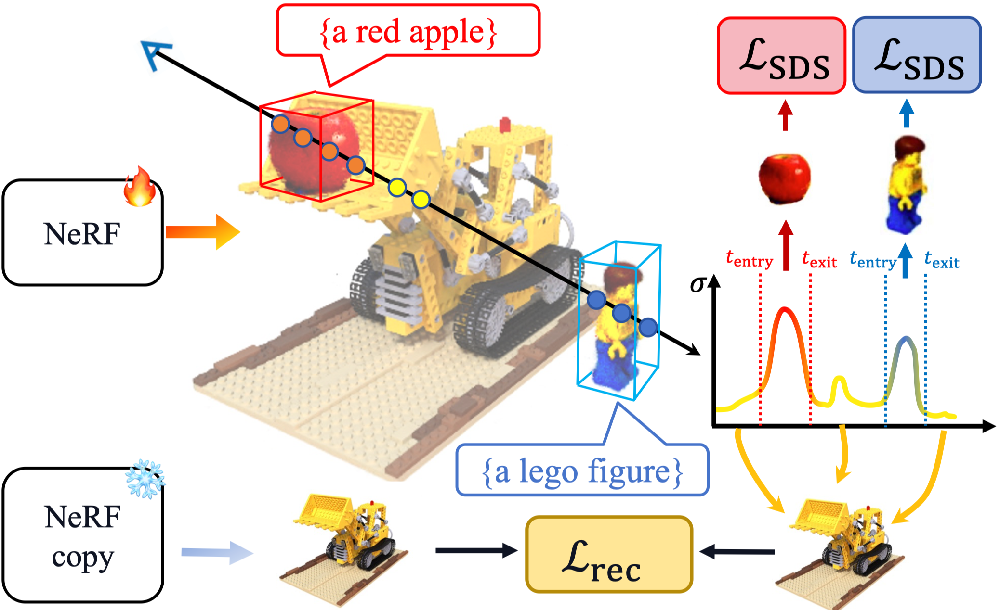
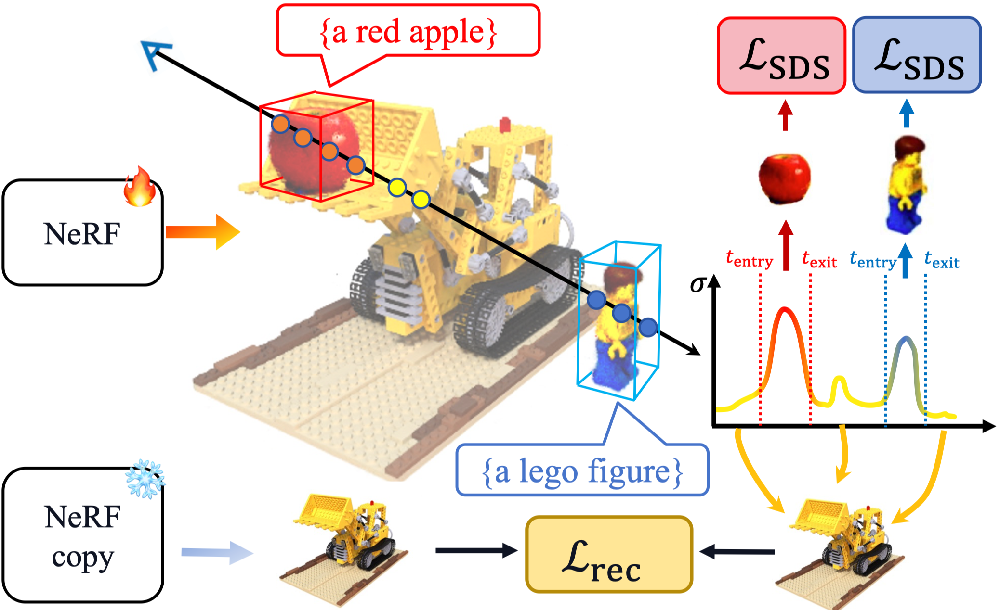
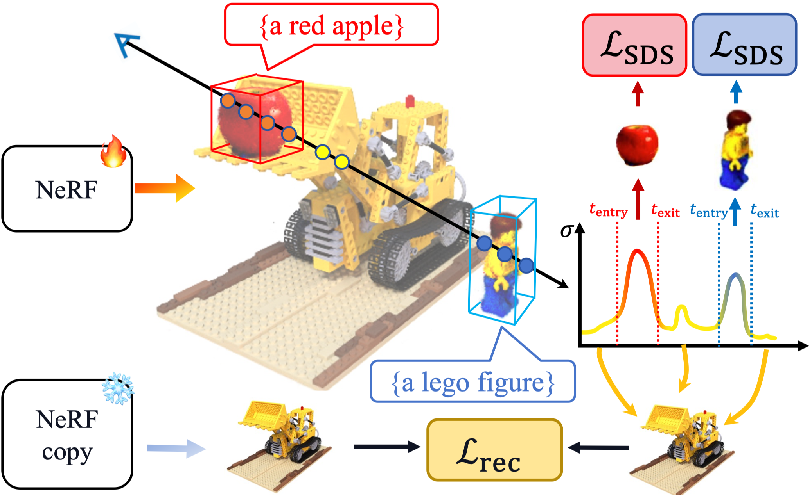

Gallery
Text-to-3D demos
Image-to-3D demos
Object placement demos
More is coming to website soon!
Abstract
With the recent development of generative models, Text-to-3D generations have also seen significant growth. Nonetheless, achieving precise control over 3D generation continues to be an arduous task, as using text to control often leads to missing objects and imprecise locations. Contemporary strategies for enhancing controllability in 3D generation often entail the introduction of additional parameters, such as customized diffusion models. This often induces hardness in adapting to different diffusion models or creating distinct objects.
In this paper, we present LucidDreaming as an effective pipeline capable of fine-grained control over 3D generation. It requires only minimal input of 3D bounding boxes, which can be deduced from a simple text prompt using a Large Language Model. Specifically, we propose clipped ray sampling to separately render and optimize objects with user specifications. We also introduce objectcentric density blob bias, fostering the separation of generated objects. With individual rendering and optimizing of objects, our method excels not only in controlled content generation from scratch but also within the pretrained NeRF scenes. In such scenarios, existing generative approaches often disrupt the integrity of the original scene, and current editing methods struggle to synthesize new content in empty spaces. We show that our method exhibits remarkable adaptability across a spectrum of mainstream Score Distillation Sampling-based 3D generation frameworks, and achieves superior alignment of 3D content when compared to baseline approaches. We also provide a dataset of prompts with 3D bounding boxes, benchmarking 3D spatial controllability.
Framework

A high-level overview of LucidDreaming pipeline, controlling prompts are decomposed into 3D bounding boxes with LLMs, such as GPT4. Then in LucidDreaming, object-centric density bias and clipped ray sampling are used with Score Distillation Sampling (SDS) loss to align the generation with the user's control.
LucidDreaming Method
We introduce clipped ray sampling to ensure the individual rendering within the controlling boxes, and object-centric density bias initialization to place the objects strictly centered within their boxes.
Clipped Ray Sampling

Object placement demos
More is coming to website soon!
Abstract
With the recent development of generative models, Text-to-3D generations have also seen significant growth. Nonetheless, achieving precise control over 3D generation continues to be an arduous task, as using text to control often leads to missing objects and imprecise locations. Contemporary strategies for enhancing controllability in 3D generation often entail the introduction of additional parameters, such as customized diffusion models. This often induces hardness in adapting to different diffusion models or creating distinct objects.
In this paper, we present LucidDreaming as an effective pipeline capable of fine-grained control over 3D generation. It requires only minimal input of 3D bounding boxes, which can be deduced from a simple text prompt using a Large Language Model. Specifically, we propose clipped ray sampling to separately render and optimize objects with user specifications. We also introduce objectcentric density blob bias, fostering the separation of generated objects. With individual rendering and optimizing of objects, our method excels not only in controlled content generation from scratch but also within the pretrained NeRF scenes. In such scenarios, existing generative approaches often disrupt the integrity of the original scene, and current editing methods struggle to synthesize new content in empty spaces. We show that our method exhibits remarkable adaptability across a spectrum of mainstream Score Distillation Sampling-based 3D generation frameworks, and achieves superior alignment of 3D content when compared to baseline approaches. We also provide a dataset of prompts with 3D bounding boxes, benchmarking 3D spatial controllability.
Framework
A high-level overview of LucidDreaming pipeline, controlling prompts are decomposed into 3D bounding boxes with LLMs, such as GPT4. Then in LucidDreaming, object-centric density bias and clipped ray sampling are used with Score Distillation Sampling (SDS) loss to align the generation with the user's control.
LucidDreaming Method
We introduce clipped ray sampling to ensure the individual rendering within the controlling boxes, and object-centric density bias initialization to place the objects strictly centered within their boxes.
Clipped Ray Sampling

With the recent development of generative models, Text-to-3D generations have also seen significant growth. Nonetheless, achieving precise control over 3D generation continues to be an arduous task, as using text to control often leads to missing objects and imprecise locations. Contemporary strategies for enhancing controllability in 3D generation often entail the introduction of additional parameters, such as customized diffusion models. This often induces hardness in adapting to different diffusion models or creating distinct objects.
In this paper, we present LucidDreaming as an effective pipeline capable of fine-grained control over 3D generation. It requires only minimal input of 3D bounding boxes, which can be deduced from a simple text prompt using a Large Language Model. Specifically, we propose clipped ray sampling to separately render and optimize objects with user specifications. We also introduce objectcentric density blob bias, fostering the separation of generated objects. With individual rendering and optimizing of objects, our method excels not only in controlled content generation from scratch but also within the pretrained NeRF scenes. In such scenarios, existing generative approaches often disrupt the integrity of the original scene, and current editing methods struggle to synthesize new content in empty spaces. We show that our method exhibits remarkable adaptability across a spectrum of mainstream Score Distillation Sampling-based 3D generation frameworks, and achieves superior alignment of 3D content when compared to baseline approaches. We also provide a dataset of prompts with 3D bounding boxes, benchmarking 3D spatial controllability.
A high-level overview of LucidDreaming pipeline, controlling prompts are decomposed into 3D bounding boxes with LLMs, such as GPT4. Then in LucidDreaming, object-centric density bias and clipped ray sampling are used with Score Distillation Sampling (SDS) loss to align the generation with the user's control.
We introduce clipped ray sampling to ensure the individual rendering within the controlling boxes, and object-centric density bias initialization to place the objects strictly centered within their boxes.
Clipped Ray Sampling
Clipped Ray Sampling. Given bounding boxes and description, sample points within the boxes are clipped between entry and exit of the corresponding object, and rendered individually for SDS loss. Points outside are used for scene preservation with reconstruction loss against a frozen copy of initialized NeRF (in this case, the Lego bulldozer).
Object-Centric Density Bias Initialization
We show two toy examples in illustration of the occupancy grids with clipped ray sampling. With default uni-sphere density bias (a), the objects are either clustered to the center (top), or totally missing due to gradient vanishing (bottom), while our object-centric bias (b) aligns the object's initial density with the given bounding boxes.
BibTeX
@article{wang2023luciddreaming,
title={LucidDreaming: Controllable Object-Centric 3D Generation},
author={Wang, Zhaoning and Li, Ming and Chen, Chen},
journal={arXiv preprint arXiv:2312.00588},
year={2023}
}